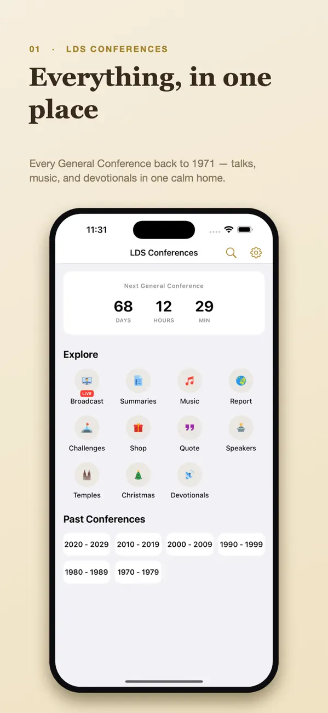
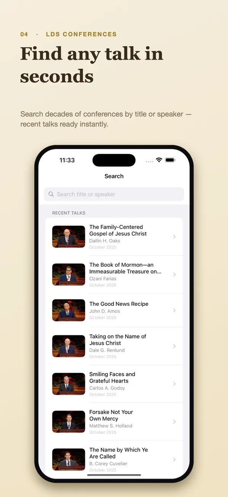
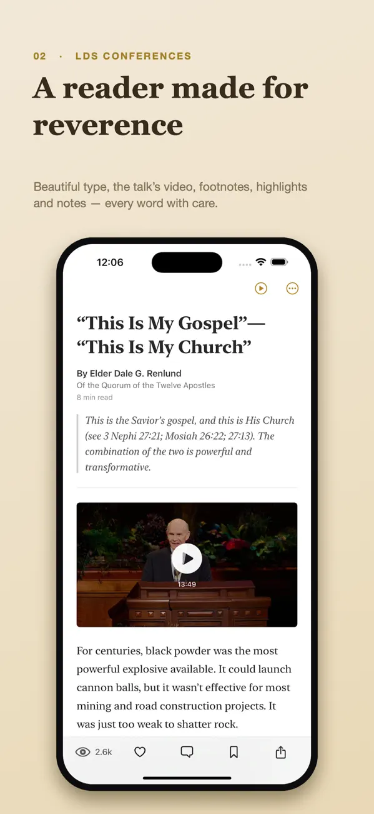

Archive
Browse across conferences
Explore addresses from sessions since 1971 by conference, session or speaker. Search the archive by talk title or speaker when you know what you are looking for.
LDS Conferences · By Kelvapp
Return to the words that stayed with you.
Find a General Conference talk, read in comfort and save what stood out. Keep highlights and notes for the next time you return.

Choose a talk, keep the passage that stood out and return to your notes. Build a reading rhythm that fits your week.
Made for everyday use
Find an address from the archive or continue a reading plan. LDS Conferences combines discovery, reading tools and conference-related media in one independent app. Content availability and live streams depend on the source services.
Archive
Explore addresses from sessions since 1971 by conference, session or speaker. Search the archive by talk title or speaker when you know what you are looking for.
Reader
Adjust typeface, text size and line spacing. Choose Light, Sepia or Dark, and watch an address’s original video when available.
Study notes
Highlight passages, add personal notes, save favorites and use reading history to pick up where you left off.
Challenges
Follow guided reading challenges, review your streaks and milestones, and explore community ratings or reviews of challenges.
Beyond talks
Find conference music, devotionals, youth broadcasts and other related material from the app’s content collection.
Conference time
Use the countdown and reminders, and follow live sessions when broadcasts are available.
Inside the app
Real screenshots from the current App Store gallery. Select an image to see it in full.


A simple place to start
Browse a conference or search by title or speaker. Start with one address you have a reason to revisit.
Choose a comfortable reading layout, highlight a passage and write down what you want to remember.
Save a favorite, continue through the session or try a reading challenge that fits your study goals.
Build a manageable General Conference study routine with one address, a few useful notes and a thoughtful return later in the week.
Read the guideFree and paid options
LDS Conferences is free to download and includes advertising. Explore its conference archive and study features.
The current US App Store lists “Remove Advertisements” as an in-app purchase for $4.99.
Prices and available purchases can vary by country and change over time. Review the current local price, entitlements and terms in the app before buying. US App Store information checked 6 November 2026.
Study notes and activity can be personal. Review the developer privacy policy for the app’s data practices, and check the relevant service’s terms when you open or watch externally provided media.
LDS Conferences is independently published by the Kelvapp developer. Use official Church sources for authoritative announcements and current guidance.
Search by talk title or speaker, or browse by conference, session and speaker.
Yes. The released app description includes highlights, personal notes, favorites and reading history.
No. Live broadcasts and media that have not been made available locally require a connection. Check availability before planning an offline study session.
Continue your study
Explore LDS Priesthood: Ordinances or read the LDS Quotes articles on hope, gratitude and prayer.
Find an address, keep what matters and return when you are ready.
iPhone · iOS 18.0 or later